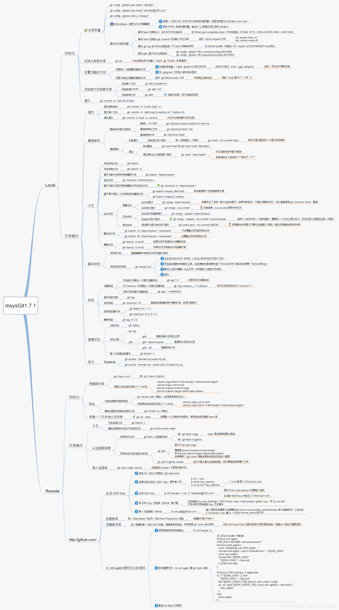

Git常用命令
最常用命令
添加
git add -A * -f 添加文件
git commit -m “v0.1”
推送
git push -u origin master
删除
git rm -r –cached 名字
git commit -m “**“
git push -u origin master
Git 常用命令速查
git branch 查看本地所有分支
git status 查看当前状态
git commit 提交
git branch -a 查看所有的分支
git branch -r 查看远程所有分支
git commit -am “init” 提交并且加注释
git remote add origin git@192.168.1.119:ndshow
git push origin master 将文件给推到服务器上
git remote show origin 显示远程库origin里的资源
git push origin master:develop
git push origin master:hb-dev 将本地库与服务器上的库进行关联
git checkout –track origin/dev 切换到远程dev分支
git branch -D master develop 删除本地库develop
git checkout -b dev 建立一个新的本地分支dev
git merge origin/dev 将分支dev与当前分支进行合并
git checkout dev 切换到本地dev分支
git remote show 查看远程库
git add .
git rm 文件名(包括路径) 从git中删除指定文件
git clone git://github.com/schacon/grit.git 从服务器上将代码给拉下来
git config –list 看所有用户
git ls-files 看已经被提交的
git rm [file name] 删除一个文件
git commit -a 提交当前repos的所有的改变
git add [file name] 添加一个文件到git index
git commit -v 当你用－v参数的时候可以看commit的差异
git commit -m “This is the message describing the commit” 添加commit信息
git commit -a -a是代表add，把所有的change加到git index里然后再commit
git commit -a -v 一般提交命令
git log 看你commit的日志
git diff 查看尚未暂存的更新
git rm a.a 移除文件(从暂存区和工作区中删除)
git rm –cached a.a 移除文件(只从暂存区中删除)
git commit -m “remove” 移除文件(从Git中删除)
git rm -f a.a 强行移除修改后文件(从暂存区和工作区中删除)
git diff –cached 或 $ git diff –staged 查看尚未提交的更新
git stash push 将文件给push到一个临时空间中
git stash pop 将文件从临时空间pop下来
git remote add origin git@github.com:username/Hello-World.git
git push origin master 将本地项目给提交到服务器中
git pull 本地与服务器端同步
git push (远程仓库名) (分支名) 将本地分支推送到服务器上去。
git fetch 相当于是从远程获取最新版本到本地，不会自动merge
git commit -a -m “log_message” (-a是提交所有改动，-m是加入log信息) 本地修改同步至服务器端 ：
git branch branch_0.1 master 从主分支master创建branch_0.1分支
git branch -m branch_0.1 branch_1.0 将branch_0.1重命名为branch_1.0
git checkout branch_1.0/master 切换到branch_1.0/master分支
du -hs
git branch 删除远程branch
git push origin :branch_remote_name
git branch -r -d branch_remote_name
初始化版本库，并提交到远程服务器端
mkdir WebApp
cd WebApp
git init 本地初始化
touch README
git add README 添加文件
git commit -m ‘first commit’
git remote add origin git@github.com:daixu/WebApp.git
增加一个远程服务器端
上面的命令会增加URL地址为‘git@github.com:daixu/WebApp.git’，名称为origin的远程服务器库，以后提交代码的时候只需要使用 origin别名即可
命令速查表
常用的Git命令
git add 添加至暂存区
git add–interactive 交互式添加
git apply 应用补丁
git am 应用邮件格式补丁
git annotate 同义词，等同于 git blame
git archive 文件归档打包
git bisect 二分查找
git blame 文件逐行追溯
git branch 分支管理
git cat-file 版本库对象研究工具
git checkout 检出到工作区、切换或创建分支
git cherry-pick 提交拣选
git citool 图形化提交，相当于 git gui 命令
git clean 清除工作区未跟踪文件
git clone 克隆版本库
git commit 提交
git config 查询和修改配置
git describe 通过里程碑直观地显示提交ID
git diff 差异比较
git difftool 调用图形化差异比较工具
git fetch 获取远程版本库的提交
git format-patch 创建邮件格式的补丁文件。参见 git am 命令
git grep 文件内容搜索定位工具
git gui 基于Tcl/Tk的图形化工具，侧重提交等操作
git help 帮助
git init 版本库初始化
git init-db 同义词，等同于 git init
git log 显示提交日志
git merge 分支合并
git mergetool 图形化冲突解决
git mv 重命名
git pull 拉回远程版本库的提交
git push 推送至远程版本库
git rebase 分支变基
git rebase–interactive 交互式分支变基
git reflog 分支等引用变更记录管理
git remote 远程版本库管理
git repo-config 同义词，等同于 git config
git reset 重置改变分支“游标”指向
git rev-parse 将各种引用表示法转换为哈希值等
git revert 反转提交
git rm 删除文件
git show 显示各种类型的对象
git stage* 同义词，等同于 git add
git stash 保存和恢复进度
git status 显示工作区文件状态
git tag 里程碑管理对象库操作相关命令
git commit-tree 从树对象创建提交
git hash-object 从标准输入或文件计算哈希值或创建对象
git ls-files 显示工作区和暂存区文件
git ls-tree 显示树对象包含的文件
git mktag 读取标准输入创建一个里程碑对象
git mktree 读取标准输入创建一个树对象
git read-tree 读取树对象到暂存区
git update-index 工作区内容注册到暂存区及暂存区管理
git unpack-file 创建临时文件包含指定 blob 的内容
git write-tree 从暂存区创建一个树对象引用操作相关命令
git check-ref-format 检查引用名称是否符合规范
git for-each-ref 引用迭代器，用于shell编程
git ls-remote 显示远程版本库的引用
git name-rev 将提交ID显示为友好名称
git peek-remote* 过时命令，请使用 git ls-remote
git rev-list 显示版本范围
git show-branch 显示分支列表及拓扑关系
git show-ref 显示本地引用
git symbolic-ref 显示或者设置符号引用
git update-ref 更新引用的指向
git verify-tag 校验 GPG 签名的Tag
- 版本库管理相关命令
git count-objects 显示松散对象的数量和磁盘占用
git filter-branch 版本库重构
git fsck 对象库完整性检查
git fsck-objects 同义词，等同于 git fsck
git gc 版本库存储优化
git index-pack 从打包文件创建对应的索引文件
git lost-found 过时，请使用 git fsck –lost-found 命令
git pack-objects 从标准输入读入对象ID，打包到文件
git pack-redundant 查找多余的 pack 文件
git pack-refs 将引用打包到 .git/packed-refs 文件中
git prune 从对象库删除过期对象
git prune-packed 将已经打包的松散对象删除
git relink 为本地版本库中相同的对象建立硬连接
git repack 将版本库未打包的松散对象打包
git show-index 读取包的索引文件，显示打包文件中的内容
git unpack-objects 从打包文件释放文件
git verify-pack 校验对象库打包文件
git常用命令表
